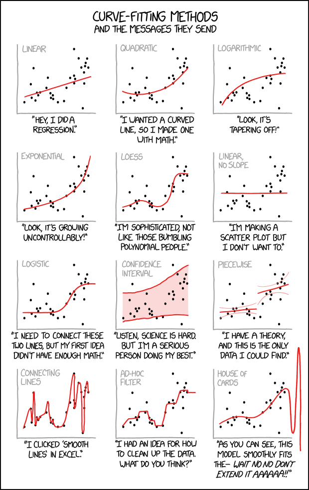

"“I have the students learn Python in our undergraduate and graduate Semantic Web courses. Why? Because basically there’s nothing else with the flexibility and as many web libraries” - Prof. James A. Hendler at the University of Maryland
Python libraries for data visualizationHere we go over some popular libraries for data visualization that are commonly used these days. They allow us to create visual data models easily according to their specifications by conveniently providing an interface, data visualization tools all in one place.
MatplotlibBy any measure, Matplotlib is the most popular and widely-used plotting library in the Python community. It’s most useful in making 2-D plots. We have a section about this library.
SeabornSeaborn is based on Matplotlib and closely integrated with the NumPy and pandas data structures. Seaborn has various dataset-oriented plotting functions that operate on data frames and arrays that have whole datasets within them. Then it internally performs the necessary statistical aggregation and mapping functions to create informative plots that the user desires. It is a high-level interface for creating beautiful and informative statistical graphics that are integral to exploring and understanding data. The Seaborn data graphics can include bar charts, pie charts, histograms, scatterplots, error charts, etc. Seaborn also has various tools for choosing color palettes that can reveal patterns in the data.
Browse Seaborn gallery.
AltairAltair is also a statistical data visualization library in Python. It is based on Vega and Vega-Lite which are a sort of declarative language for creating, saving, and sharing data visualization designs that are also interactive. Altair can be used to create beautiful data visualizations of plots such as bar charts, pie charts, histograms, scatterplots, error charts, power spectra, stemplots, etc. using a minimal amount of coding. You can open Jupyter Notebook or JupyterLab and execute any of the code to obtain that data visualizations in Altair.
Browse Altair gallery.
BokehBokeh is a data visualization library that provides detailed graphics with a high level of interactivity across various datasets, whether they are large or small. Bokeh is based on The Grammar of Graphics like ggplot but it is native to Python while ggplot is based on ggplot2 from R. Data visualization experts can create various interactive plots for modern web browsers using bokeh which can be used in interactive web applications, HTML documents, or JSON objects.
Bokeh has 3 levels that can be used for creating visualizations. The first level focuses only on creating the data plots quickly, the second level controls the basic building blocks of the plot while the third level provides full autonomy for creating the charts with no pre-set defaults. This level is suited to the data analysts and professionals that are well versed in the technical side of creating data visualizations.
Browse Bokeh demos.
PlotlyPlotly is a free open-source graphing library that can be used to form data visualizations. It’s built on top of the Plotly JavaScript library and can be used to create web-based data visualizations that can be displayed in Jupyter notebooks or web applications using Dash or saved as individual HTML files.
Plotly provides more than 40 unique chart types like scatter plots, histograms, line charts, bar charts, pie charts, error bars, box plots, multiple axes, sparklines, dendrograms, 3-D charts, contour plots, etc. It can be used offline with no internet connection.
Browse Plotly gallery to discover things you would be interested in.
PygalPygal is a Python data visualization library that is made for creating great charts! While Pygal is similar to Plotly or Bokeh in that it creates data visualization charts that can be embedded into web pages and accessed using a web browser, a primary difference is that it can output charts in the form of SVG’s or Scalable Vector Graphics. These SVG’s ensure that you can observe your charts clearly without losing any of the quality even if you scale them.
CartopyCartopy makes use of the powerful PROJ, numpy, and shapely modules and includes a programmatic interface built on top of matplotlib for the creation of publication-quality maps. We have a section about this library.
Browse Cartopy gallery.
GeoplotlibGeoplotlib supports the creation of geographical maps in particular with many different types of maps available such as dot-density maps, choropleths, symbol maps, etc. One thing to keep in mind is that requires NumPy and pyglet as prerequisites before installation.
In conclusion, all these Python Libraries for Data Visualization are great options for creating beautiful and informative data visualizations. Each of these has its strong points and advantages so you can select the one that is perfect for your data visualization or project. For example, Matplotlib is extremely popular and well suited to general 2-D plots while cartopy and Geoplotlib are uniquely suite to geographical visualizations. So go on and choose your library to create a stunning visualization in Python!
FoliumFolium makes it easy to visualize data on an interactive leaflet map. The library has a number of built-in tilesets from OpenStreetMap, Mapbox, and Stamen. Even though Plotly, Altair, and Bokeh also enable us to create maps, Folium uses an open street map to give you a closer feeling to a Google Map with minimum code.
In conclusion, all these Python Libraries for Data Visualization are great options for creating beautiful and informative data visualizations. Each of these has its strong points and advantages so you can select the one that is perfect for your data visualization or project. For example, Matplotlib is extremely popular and well suited to general 2-D plots while Cartopy and Geoplotlib are uniquely suite to geographical visualizations. So go on and choose your library to create a stunning visualization in Python!
Python librarlies for Earth Data ScienceThe list below contains the core packages that you will use in the upcoming chapters of this textbook to work with scientific data.
os: handle files and directories.glob: create lists of files and directories for batch processing.rasterio: work with raster (image and arrays) data.geopandas: work with vector format (shapefiles, geojson - points, lines and polygons) using a geodataframe format.earthpy: plot and manipulate spatial data (raster and vector).Python next?So far we have covered the basics of Python and fundamental modules to make plots and analyze data. Looking forward, the learning curve is still steep, be patient as it takes time. Use Google and stackoverflow without hesitation, as you will find 9 out 10 times your questions/issues have been reported and solved (luckily) already.
Have fun!

{kind=link}